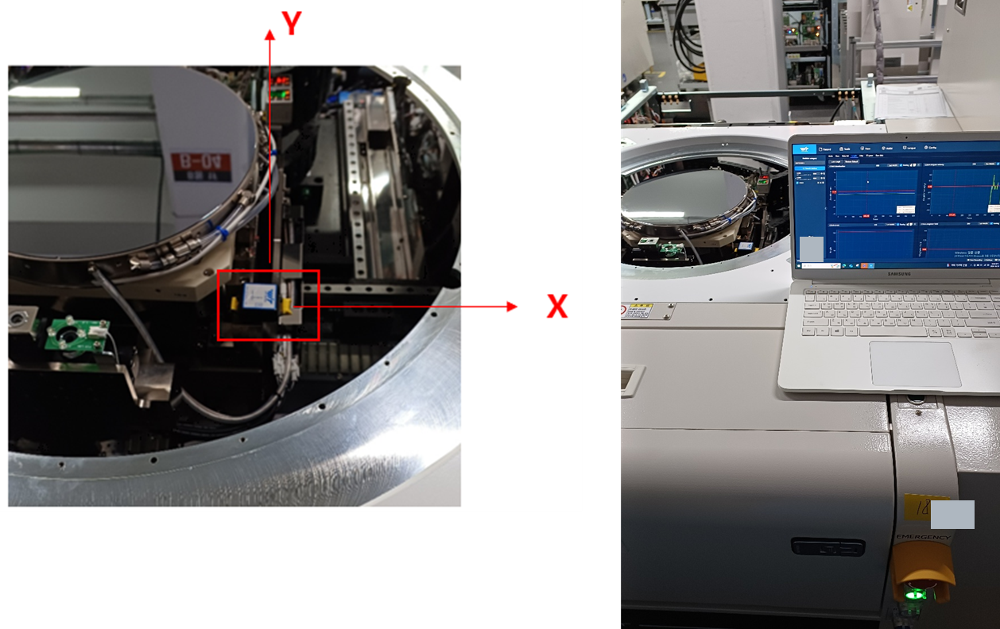

F1 = 0.9493
34.8% improvement
Problem definition
Overgain faults in wafer probing are associated with probing failures. Long sensor sequences require an effective anomaly detection method.
My contributions
Led the collaborative project as PM and developed a self-supervised model using window-based attention and cyclic shifts for long wafer-probing sequences.
Method overview
Tri-axial motion signals
Window attention + cyclic shifts
Anomaly detection

Results
F1-score of 0.9493 and a 34.8% improvement over AnomalyBERT; validated on real wafer-probing data.

Technical focus
Time series · Self-supervised learning · Swin Transformer
Read publication ↗Industrial data, internal source code and non-public implementation details are not included.